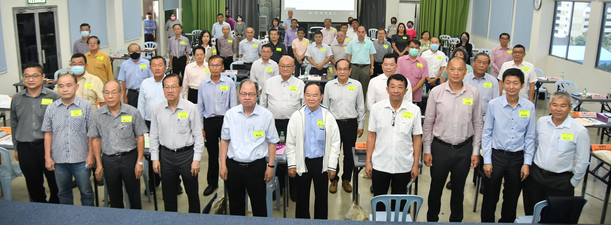

2022年度董总会员代表大会
出席者合影。2022年度董总会员代表大会于6月25日举行，并通过了10项大会提案，包括要求政府尽快拟定《多元文化教育政策》的指导性文件，吁请政府公平拨款各源流教育，以及全面承认华文独中统考证书等。
董总主席陈大锦在致词时表示，新届董总中委已成立，董总领导层无论由谁当家，都必须秉持“超越政党，不超越政治”理念，不偏袒任何一方政党，凡维护母语教育及提倡多元文化的政党均给予支持，同时董总将密切监督政府政策，及时提出建言。
“无论是华教课题如师资短缺、华淡小违宪案、爪夷字课题、而连突同道被控非法集会案、吉隆坡启智华小新校舍土地拥有权等等，我们以行动及文告声明批判各类不公之举，并阐明改革建议与政策方案，向社会倡导正确的价值理念。我们坚信，唯有提倡多元开放与巩固民主价值，才能真正实现平等权利、政策合理、制度公平的理想，华文教育方能健全的发展。”
他也指出，董总目前正在进行的一项主要建设工作，就是筹建华教综合大厦。
“如今图测已获得市议会批准，现在正积极处理公开招标事宜，动工之期指日可待。然而近期各类建材价格飙涨，筹款目标亦从原定3,000万令吉提高至4,200万令吉，截至6月7日已经筹获逾3,000万令吉。”他呼吁华教同道再接再厉，让华教综合大厦能够如期完成。
针对推动独中教育发展与改革课题，陈大锦强调，随着教育日益着重学生的素养与能力之形塑，教育评量亦需更为全面与多元，如实掌握学生学习成效，推动全人教育之发展。他补充，因此，从课程编撰、师资培训、考试评量到政策制定，教育改革方方面面，为了让独中教育能够与时俱进，董总未来将会加大投入更多资源加以推动。
本次大会共有13个州属会45位代表出席。
出席名单：
1. 柔佛州华校董教联合会：陈大锦（主席）、徐来兴（署理主席）、吴令富（副主席）、陈大成（总务）
2. 马六甲州华校董事会联合会：萧汉昌（主席）、杨应俊（署理主席）、杨才国（总务）、蔡明彪（副总务）、陈书森（副文书）
3. 森美兰华校董事会联合会：吴小铭（主席）、萧福才（副主席）、陈继善（总务）
4. 雪兰莪暨吉隆坡联邦直辖区华校董事会联合会：蔡庆文（主席）、陈友信（副主席）、黄再兴（副主席）、罗志昌（秘书长）、陈云枫（财政）
5. 霹雳华校董事会联合会：颜登逸（主席）、郑庭忠（财政）
6. 槟威华校董事联合会：李添霖（主席）、陈玉鐘（副主席）、黄水芝（财政）、王声捷（联络主任）、符利福（中文书）
7. 吉打州华校董事联合会：庄俊隆（主席）、潘光耀（副主席）、陈贵源（财政）、陈国辉（会务顾问）、黄印全（理事）
8. 玻璃市华校董事联合会：涂兴全（总务）、刘锡通（副总务）、王桂叶（委员）
9. 彭亨州华校董事联合会：杨安山（署理主席）、吴思亿（副主席）、杨月明（理事）
10. 登嘉楼华校董事联合会：卢成良（主席）、邱丽仙（秘书）、许瑞发（理事）
11. 吉兰丹州华校董事教师联合会：叶光威（主席）
12. 砂拉越华校董事联合会总会：包章文（署理主席）、黄良杰（秘书长）
13.沙巴华文独立中学董事会联合总会：谢瑶（署理主席）、林雅敏（副主席）、林湧斌（秘书长）、吴秀传（理事）
2022年度董总会员代表大会 通过10项提案
1. 基于我国宪法及法令已确立各源流教育体系的法定地位，要求政府尽快拟定《多元文化教育政策》的指导性文件，确保教育平等与母语教育权利。
案由：政府应纠正教育政策偏差，拟定政策时贯彻多元开放理念，务求促进族群融合，以推动国民团结为终极目标。多元文化教育政策需秉持尊重多元、包容差异，致力于平等之原则，戮力发展多源流教育体系，提升族群关系，加强社会凝聚力。
2. 基于宪法和法令已保障母语教育权利及多源流教育体系，要求政府制度化公平分配资源与拨款各源流教育，依社区需求增建各源流学校。
案由：华淡小自我国独立前已存在，与各源流学校一样长期为国栽培人才。吉隆坡和哥打峇鲁高等法院日前已先后宣判华淡小并未违宪，因此任何对华淡小合法性之质疑，既漠视多元社会现实，亦罔顾多源流教育历来的贡献。政府应当秉持平等原则，合理分配资源，制度化增建各源流学校、公平分配教育拨款、足够的合格师资。
3. 促请政府成立独立的教育监察委员会，以监督教育部行使公共权力的运作，强化施政效率，防止滥权弊端。
案由：我们要求成立独立的教育监察委员会。委员会须具有法定地位，并向国会负责与提呈年度报告，以确保其独立性。民众可就管理不善、违法行政、不公平、歧视、滥权、不回覆、拒绝提供资讯、不合理的延迟等理由向委员会申诉。
4. 要求政府确保各级学校的预算经费、专业师资、网络设备等设施均衡分配，以改善城乡教育差距，维护完善安全的教育环境。
案由：我国网上教学资源不足，基层学生难以跨越数码鸿沟，偏乡学校的校舍设备，经常因老旧年久失修，影响师生日常使用便利。不少学校建筑出现危楼，多年前吉华K校老师坠楼并非个案，北大住宿生日前意外毙命，国立大学设施安全问题再成外界关注焦点。教育部必须加强管理维护，定期安检维修，改善校舍设备，除了保障校园安全，也有助于稳定偏乡师资，维护教学环境品质。
5. 促请政府尽速全面承认华文独中统考证书，作为进入国立大学及公共服务机构的录取资格。
案由：文独中多年来为我国各领域培育人才，贡献良多。华文独中统一课程，包括历史科在内，亦遵循国家教育课程标准的方针，拟订课程标准过程中，以国家教育部颁布的学科课程标准为参考蓝本，并规定国语为必修科目之一，符合国家宪法与国家多元教育原则。
6. 要求教育部按照我国多元国情，以多元文化方式介绍各族书法艺术，搁置华淡小马来文科的爪夷字教学单元。
案由：教育部无视华印社会的疑虑与不满，今年继续在华淡小四、五、六年级马来文科介绍爪夷字。我们要求搁置华淡小马来文科的爪夷字教学，停止发放问卷调查。当局应沿用或参照2015年至2020年的华淡小五年级马来文课本的呈现方式，以不纳入课程与评估标准（DSKP）的形式介绍各族群书法艺术，包括爪夷字、中文和淡米尔文书法等内容，才符合我国多元社会现实。
7. 要求政府纠正中小学历史教科书的史实错误，肯定各族群对马来西亚开邦立国的贡献事迹。
案由：作为学校教材，历史教科书的编撰应当实事求是，各族对这片土地的贡献，理应不分族裔给予平等对待，同时必须中肯反映历史原貌，还原历史人物应有的地位。历史教育若过于强调特定族群、文化和宗教，有悖我国多元族群文化的国情，不但无法培养学生的思辨与批判能力，无法团结各族学生，亦将使到新生代误解历史，不利于国民团结。
8. 要求政府制定完善的师资培训制度，一劳永逸解决国民型中学华裔教师、国中华文班与华小师资不足问题。
案由：教育部除了推出单次招聘计划外（2021年7月），应掌握国民型中学、国中华文班与华小的师资需求，制定有效调派机制，加强培训规划，确保结业者的专业素质，同时，检讨师范学院招聘制度，解决部分科目申请人数过低问题。
9. 促请政府恢复“国民型中学”的法定地位，履行当年的承诺，改善国民型中学的发展困境。
案由：政府必须兑现当年华文中学改制为国民型中学前的承诺。《1996年教育法令》已废除“国民型中学”的法定地位，将其归为“国民中学”，于法无据、于理不合、于情不通，明显违背当年承诺。政府必须修法，恢复国民型中学使用“SMJK”（Sekolah Menengah Jenis Kebangsaan）的名称。此外，国民型中学是依据教育法令改制纳入国家教育体制的全津贴中学，因此政府有责任解决其经费、校舍不足及华裔师资偏低问题，避免影响学生的学习权益。
10. 促请政府鼓励民间团体贡献教育事业，其所得盈余，不论捐款人或受益单位，应一律豁免缴税。非营利组织和民办教育机构也应免于缴付人力资源发展基金（HRDF）。
案由：民间的非营利教育机构或社团，长期以来自愿自发弥补国家在教育领域的不足，协助栽培大量人才，同时分担国家财政压力。政府理应肯定民间的无私参与，给予免税以示鼓励，鼓励它们继续为国贡献。与此同时，疫情下民办教育机构亦面对巨大经济压力，政府理应豁免征收人力资源发展基金，以减轻其财务负担。